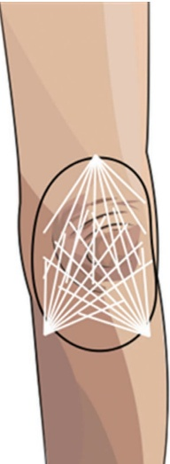
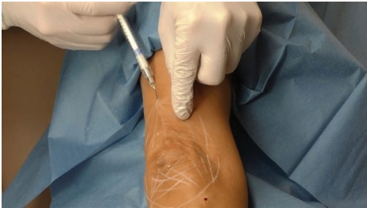
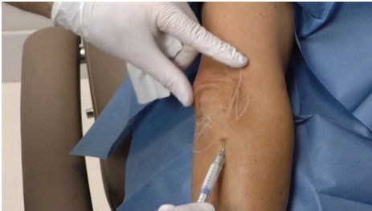
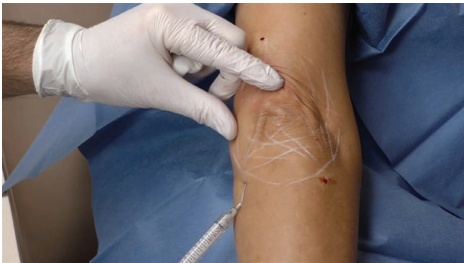
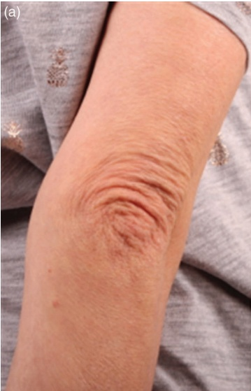
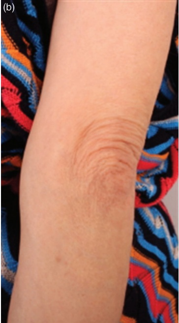

35 四肢：肘部皮肤质量改善
四肢肘部皮肤质量改善
JANI VAN LOGHEM
35.1 引言
随着年龄的增长，皮肤会流失胶原蛋白和弹性纤维，内源性和外源性因素都会影响肘部皮肤的老化。由于该特定皮肤习惯于持续拉伸（弯曲手臂），其厚度明显大于上臂，并且因胶原纤维断裂而出现明显的皱纹。
尽管吸脂常用于去除上臂的异常脂肪组织，腕部成形术旨在去除大量减重后的松弛皮肤 [1-3]，但这些治疗方法并未针对皮肤质量的变化。稀释的羟基磷灰石钙（CaHA）是一种有效的非手术选择，可显著增加皮肤的强度和弹性，从而减轻皮肤松弛并改善肘部区域的外观 [4]。
35.2 解剖学危险点
注射应尽可能接近真皮层，最好位于即刻真皮下层次。该位置有助于避免伤臂动脉的分支。
35.3 肘部钝性套管针技术
35.4.1 分步技术
注射定位参见图 35.1
-
对治疗区域进行消毒。
-
标记治疗区域（圆形或方形）和皮肤褶皱的方向。
-
标记注射点，理想情况下从绘制形状的不同侧面选择三个到四个点。
-
将 CaHA 与利多卡因和生理盐水混合，将其稀释至 1:0.5 至 1:3（取决于松弛的严重程度）。
-
使用一根长 22G 的钝性套管针（50 或 70 毫米）和配套的 21G 锐针。
-
如有必要，通过注射少量肾上腺素化的利多卡因对入点进行麻醉。
-
用 21G 锐针刺破皮肤至注射点。
-
插入 22G 的钝性套管针。
-
沿钝性套管针的方向拉伸皮肤，以控制钝性套管针的正确深度。确保钝性套管针保持在即刻真皮下层次。
-
如有必要，可以将钝性套管针弯曲，使斜面朝上，以便于浅层放置。
-
从每个注射点以逆行线性扇形的方式注射 CaHA（图 35.2）。
-
缓慢地进行每次逆行注射，注入约 0.05–0.1 mL（图 35.3–35.4）。
-
重复此过程，直到整个治疗区域覆盖一层稀释的 CaHA。
-
如果观察到明显的凹凸不平，则按摩整个区域以确保产品均匀分布。
有关术前和术后效果以及应用技术，请参见图 35.5。




35.5 术后护理
可能会观察到一些肿胀，但通常是自限性的。除保持入点清洁以预防感染外，无需特殊的术后护理。
35.6 实现最佳效果的附加治疗
对于松弛更严重或皮肤较厚的患者，可能需要结合使用其他紧肤技术（例如射频、可视化微焦超声、微针等）进行联合治疗，以达到最佳效果。


参考文献
[1] D. J. Hurwitz, S. W. Holland, "The L-brachioplasty: An innovative approach to correct excess tissue of the upper arm, axilla, and lateral chest," Plast Reconstr Surg, vol. 117, no. 2, pp. 403–411, 2006.
[2] D. J. Hurwitz, T. Neavin, "L-brachioplasty correction of excess tissue of the upper arm, axilla, and lateral chest," Clin Plast Surg, vol. 35, no. 1, pp. 131–140, 2008.
[3] D. J. Hurwitz, K. Jerrod, "L-brachioplasty: An adaptable technique for moderate to severe excess skin and fat of the arms," Aesthet Surg J, vol. 30, no. 4, pp. 620–629, 2010.
[4] K. Goldie et al., “Global consensus guidelines for the injection of diluted and hyperdiluted calcium hydroxylapatite for skin tightening,” Dermatol Surg, vol. 44, no. Suppl 1, pp. S32–S41, 2018.